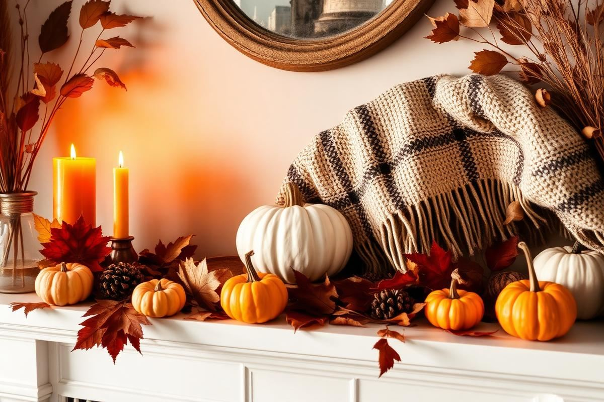
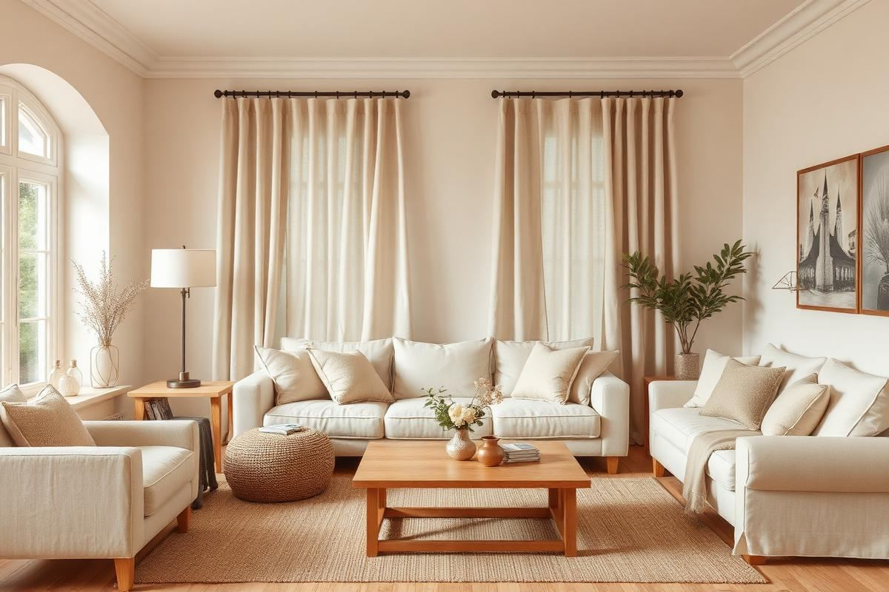
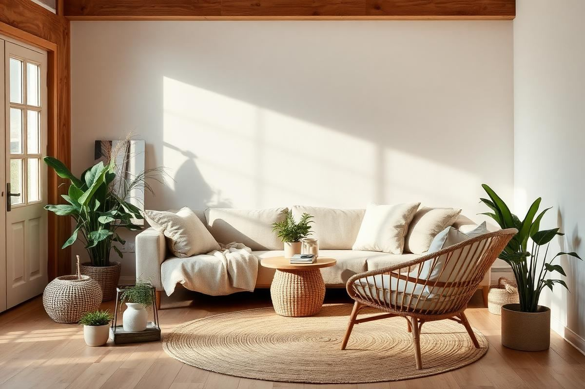
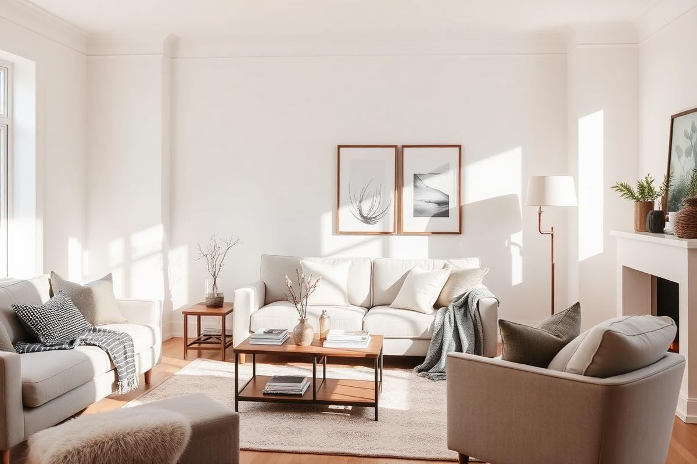
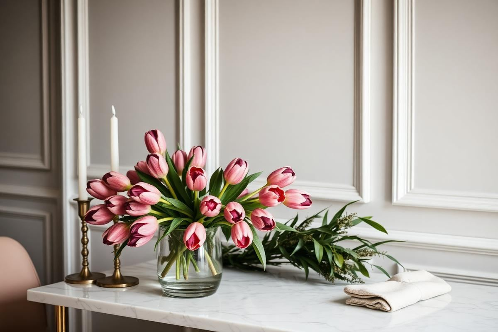

Seasonal & Trends
Fall Home Decor Guide: Warm Up the House Without Clutter
Great fall decor is a shift in temperature, not a shopping trip. Here is how to make the change with what you already own.
8 min read
Season-by-season decorating guides and honest coverage of the trends worth investing in — and the ones worth skipping.

Great fall decor is a shift in temperature, not a shopping trip. Here is how to make the change with what you already own.

Warm neutrals are the safest and most flattering base for a whole-home palette. Here is how to build one on purpose.

Sustainable decor is not one label or one shop. It is a small number of decisions that compound.

January rooms feel flat once the decorations come down. This is the room-by-room reset I run every year to make a house feel calm, warm, and organised again.

Pink hearts and foil banners are not the only option. Here is how to mark Valentine's Day with a palette, some good candlelight, and flowers that last past the weekend.